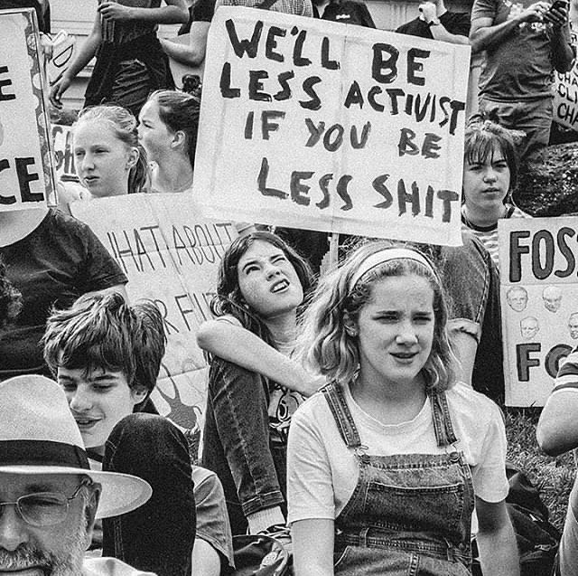

Tea & Policy
Where we spill the tea on political policies

Waarom naar ons luisteren?
Ben je er ook klaar mee dat het nieuws en de politiek op zo'n saaie en langdradige manier wordt overgebracht en dat het ook niet eens altijd de waarheid is? Wij ook! Daarom zijn wij begonnen met Tea & Policy, waarbij wij 1 uurtje per week het hebben over het recente nieuws en de huidige status in de politiek. Don't worry je zal je niet vervelen.